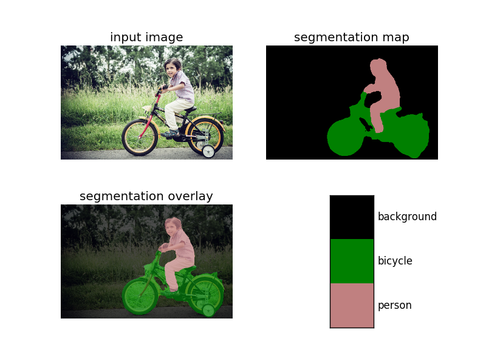

使用TensorFlow DeepLab进行语义分割
参考 https://github.com/tensorflow/models/tree/master/research/deeplab
使用 TensorFlow DeepLab 进行语义分割

准备
文件结构
这里以 PASCAL VOC 2012 为例，参考官方推荐的文件结构：
123456789101112131415161718192021222324252627282930313233343536373839deeplab/datasets/pascal_voc_seg├── exp│ └── train_on_train_set│ ├── eval│ │ └── events.out.tfevents....│ ├── export│ │ └── frozen_inference_graph.pb│ ├── train│ │ ├── checkpoint│ │ ├── events.out.tfevents....│ │ ├── graph.pbtxt│ │ ├── model.ckpt-0.data-00000-of-00001│ │ ├── model.ckpt-0.index│ │ ├── model.ckpt-0.meta│ │ └── ...│ └── vis│ ├── graph.pbtxt│ ├── raw_segmentation_results│ └── segmentation_results├── init_models│ └── deeplabv3_pascal_train_aug│ ├── frozen_inference_graph.pb│ ├── model.ckpt.data-00000-of-00001│ └── model.ckpt.index├── tfrecord│ ├── ....tfrecord│ └── ...└── VOCdevkit└── VOC2012├── Annotations├── ImageSets│ ├── Action│ ├── Layout│ ├── Main│ └── Segmentation├── JPEGImages├── SegmentationClass├── SegmentationClassRaw└── SegmentationObject安装 TensorFlow
参考 https://www.tensorflow.org/install/ ，安装 TensorFlow v1.5.0 或更新的版本。
如果操作系统、GPU 型号、Python 版本号等配置跟官方一致，可直接使用官网提供的安装包安装。
编译源码时注意 bazel 可能并不能总是获取
$LD_LIBRARY_PATH，如有报错，可以尝试添加参数action_env：
1bazel build --config=opt --config=cuda tensorflow/tools/pip_package:build_pip_package --action_env="LD_LIBRARY_PATH=${LD_LIBRARY_PATH}"配置 TensorFlow Models
- 下载 TensorFlow Models
1git clone https://github.com/tensorflow/models.git- 添加
$PYTHONPATH
12# From tensorflow/models/research/export PYTHONPATH=$PYTHONPATH:`pwd`:`pwd`/slim- 测试
12# From tensorflow/models/research/python deeplab/model_test.py若成功，显示
OK。准备数据
这里以
PASCAL VOC 2012为例。参考 https://github.com/tensorflow/models/blob/master/research/deeplab/g3doc/pascal.md
运行以下代码即可：
12# From deeplab/datasets/sh download_and_convert_voc2012.sh实际上，该脚本执行了以下操作：
- 下载并解压
123# From deeplab/datasets/pascal_voc_seg/wget http://host.robots.ox.ac.uk/pascal/VOC/voc2012/VOCtrainval_11-May-2012.tartar -xf VOCtrainval_11-May-2012.tar- 移除 ground-truth 中的 colormap
1234567# From deeplab/datasets/PASCAL_ROOT="pascal_voc_seg/VOCdevkit/VOC2012"SEG_FOLDER="${PASCAL_ROOT}/SegmentationClass"SEMANTIC_SEG_FOLDER="${PASCAL_ROOT}/SegmentationClassRaw"python ./remove_gt_colormap.py \--original_gt_folder="${SEG_FOLDER}" \--output_dir="${SEMANTIC_SEG_FOLDER}"- 生成 TFRecord
1234567891011# From deeplab/datasets/OUTPUT_DIR="pascal_voc_seg/tfrecord"mkdir -p "${OUTPUT_DIR}"IMAGE_FOLDER="${PASCAL_ROOT}/JPEGImages"LIST_FOLDER="${PASCAL_ROOT}/ImageSets/Segmentation"python ./build_voc2012_data.py \--image_folder="${IMAGE_FOLDER}" \--semantic_segmentation_folder="${SEMANTIC_SEG_FOLDER}" \--list_folder="${LIST_FOLDER}" \--image_format="jpg" \--output_dir="${OUTPUT_DIR}"（可选）下载模型
官方提供了不少预训练模型（ https://github.com/tensorflow/models/blob/master/research/deeplab/g3doc/model_zoo.md ），
这里以
deeplabv3_pascal_train_aug_2018_01_04以例。12345# From deeplab/datasets/pascal_voc_seg/mkdir init_modelscd init_modelswget http://download.tensorflow.org/models/deeplabv3_pascal_train_aug_2018_01_04.tar.gztar zxf ssd_mobilenet_v1_coco_11_06_2017.tar.gz
训练
如果使用现有模型进行预测则不需要训练。
训练
新建
deeplab/datasets/pascal_voc_seg/exp/train_on_train_set/train.sh，内容如下：12345678910111213141516171819mkdir -p logs/now=$(date +"%Y%m%d_%H%M%S")python ../../../../train.py \--logtostderr \--train_split="train" \--model_variant="xception_65" \--atrous_rates=6 \--atrous_rates=12 \--atrous_rates=18 \--output_stride=16 \--decoder_output_stride=4 \--train_crop_size=513 \--train_crop_size=513 \--train_batch_size=4 \--training_number_of_steps=10 \--fine_tune_batch_norm=false \--tf_initial_checkpoint="../../init_models/deeplabv3_pascal_train_aug/model.ckpt" \--train_logdir="train/" \--dataset_dir="../../tfrecord/" 2>&1 | tee logs/train_$now.txt &进入
deeplab/datasets/pascal_voc_seg/exp/train_on_train_set/，运行
sh train.sh即可训练。验证
可一边训练一边验证，注意使用其它的GPU或合理分配显存。
新建
deeplab/datasets/pascal_voc_seg/exp/train_on_train_set/eval.sh，内容如下：123456789101112131415python ../../../../eval.py \--logtostderr \--eval_split="val" \--model_variant="xception_65" \--atrous_rates=6 \--atrous_rates=12 \--atrous_rates=18 \--output_stride=16 \--decoder_output_stride=4 \--eval_crop_size=513 \--eval_crop_size=513 \--checkpoint_dir="train/" \--eval_logdir="eval/" \--dataset_dir="../../tfrecord/" &# --max_number_of_evaluations=1 &进入
deeplab/datasets/pascal_voc_seg/exp/train_on_train_set/，运行
CUDA_VISIBLE_DEVICES="1" sh eval.sh即可验证（这里指定了第二个 GPU）。可视化 log
可一边训练一边可视化训练的 log，访问
http://localhost:6006/即可看到 loss 等的变化。12# From deeplab/datasets/pascal_voc_seg/exp/train_on_train_settensorboard --logdir train/可视化验证的 log，可看到
miou_1.0的变化，这里指定了另一个端口。12# From deeplab/datasets/pascal_voc_seg/exp/train_on_train_settensorboard --logdir eval/ --port 6007或同时可视化训练与验证的log：
12# From deeplab/datasets/pascal_voc_seg/exp/train_on_train_settensorboard --logdir .可视化分割结果
可一边训练一边可视化分割结果。
新建
deeplab/datasets/pascal_voc_seg/exp/train_on_train_set/vis.sh，内容如下：123456789101112131415python ../../../../vis.py \--logtostderr \--vis_split="val" \--model_variant="xception_65" \--atrous_rates=6 \--atrous_rates=12 \--atrous_rates=18 \--output_stride=16 \--decoder_output_stride=4 \--vis_crop_size=513 \--vis_crop_size=513 \--checkpoint_dir="train/" \--vis_logdir="vis/" \--dataset_dir="../../tfrecord/" &# --max_number_of_evaluations=1 &进入
deeplab/datasets/pascal_voc_seg/exp/train_on_train_set/，运行
sh vis.sh即可生成分割结果，vis/segmentation_results/里有彩色化的分割结果，vis/raw_segmentation_results/里有原始的分割结果。
测试
导出模型
训练完成后得到一些 checkpoint 文件在
deeplab/datasets/pascal_voc_seg/exp/train_on_train_set/train/中，如：- graph.pbtxt
- model.ckpt-1000.data-00000-of-00001
- model.ckpt-1000.info
- model.ckpt-1000.meta
其中 meta 文件保存了 graph 和 metadata，ckpt 文件保存了网络的 weights。
而进行预测时只需模型和权重，不需要 metadata，故可使用官方提供的脚本生成推导图。
新建
deeplab/datasets/pascal_voc_seg/exp/train_on_train_set/export_model.sh，内容如下：1234567891011121314python ../../../../export_model.py \--logtostderr \--checkpoint_path="train/model.ckpt-$1" \--export_path="export/frozen_inference_graph-$1.pb" \--model_variant="xception_65" \--atrous_rates=6 \--atrous_rates=12 \--atrous_rates=18 \--output_stride=16 \--decoder_output_stride=4 \--num_classes=21 \--crop_size=513 \--crop_size=513 \--inference_scales=1.0进入
deeplab/datasets/pascal_voc_seg/exp/train_on_train_set/，运行
sh export_model.sh 1000即可导出模型export/frozen_inference_graph-1000.pb。测试图片
运行
deeplab_demo.ipynb并修改其中的各种路径即可。或自写 inference 脚本，如
deeplab/datasets/pascal_voc_seg/exp/train_on_train_set/infer.py123456789101112131415161718192021222324252627282930313233343536373839404142434445464748495051525354555657585960616263646566676869707172737475767778798081828384858687888990919293949596979899100101102103104import syssys.path.append('../../../../utils/')from matplotlib import pyplot as pltimport numpy as npfrom PIL import Imageimport tensorflow as tfimport get_dataset_colormapLABEL_NAMES = np.asarray(['background', 'aeroplane', 'bicycle', 'bird', 'boat', 'bottle', 'bus','car', 'cat', 'chair', 'cow', 'diningtable', 'dog', 'horse', 'motorbike','person', 'pottedplant', 'sheep', 'sofa', 'train', 'tv'])FULL_LABEL_MAP = np.arange(len(LABEL_NAMES)).reshape(len(LABEL_NAMES), 1)FULL_COLOR_MAP = get_dataset_colormap.label_to_color_image(FULL_LABEL_MAP)class DeepLabModel(object):"""Class to load deeplab model and run inference."""INPUT_TENSOR_NAME = 'ImageTensor:0'OUTPUT_TENSOR_NAME = 'SemanticPredictions:0'INPUT_SIZE = 513def __init__(self, model_path):"""Creates and loads pretrained deeplab model."""self.graph = tf.Graph()with open(model_path) as fd:graph_def = tf.GraphDef.FromString(fd.read())with self.graph.as_default():tf.import_graph_def(graph_def, name='')self.sess = tf.Session(graph=self.graph)def run(self, image):"""Runs inference on a single image.Args:image: A PIL.Image object, raw input image.Returns:resized_image: RGB image resized from original input image.seg_map: Segmentation map of `resized_image`."""width, height = image.sizeresize_ratio = 1.0 * self.INPUT_SIZE / max(width, height)target_size = (int(resize_ratio * width), int(resize_ratio * height))resized_image = image.convert('RGB').resize(target_size,Image.ANTIALIAS)batch_seg_map = self.sess.run(self.OUTPUT_TENSOR_NAME,feed_dict={self.INPUT_TENSOR_NAME: [np.asarray(resized_image)]})seg_map = batch_seg_map[0]return resized_image, seg_mapdef vis_segmentation(image, seg_map):plt.figure()plt.subplot(221)plt.imshow(image)plt.axis('off')plt.title('input image')plt.subplot(222)seg_image = get_dataset_colormap.label_to_color_image(seg_map, get_dataset_colormap.get_pascal_name()).astype(np.uint8)plt.imshow(seg_image)plt.axis('off')plt.title('segmentation map')plt.subplot(223)plt.imshow(image)plt.imshow(seg_image, alpha=0.7)plt.axis('off')plt.title('segmentation overlay')unique_labels = np.unique(seg_map)ax = plt.subplot(224)plt.imshow(FULL_COLOR_MAP[unique_labels].astype(np.uint8),interpolation='nearest')ax.yaxis.tick_right()plt.yticks(range(len(unique_labels)), LABEL_NAMES[unique_labels])plt.xticks([], [])ax.tick_params(width=0)plt.show()if __name__ == '__main__':if len(sys.argv) < 3:print('Usage: python {} image_path model_path'.format(sys.argv[0]))exit()image_path = sys.argv[1]model_path = sys.argv[2]model = DeepLabModel(model_path)orignal_im = Image.open(image_path)resized_im, seg_map = model.run(orignal_im)vis_segmentation(resized_im, seg_map)运行以下命令即可：
1234# From deeplab/datasets/pascal_voc_seg/exp/train_on_train_set/python infer.py \../../../../g3doc/img/image1.jpg \export/frozen_inference_graph.pb运行结果：
